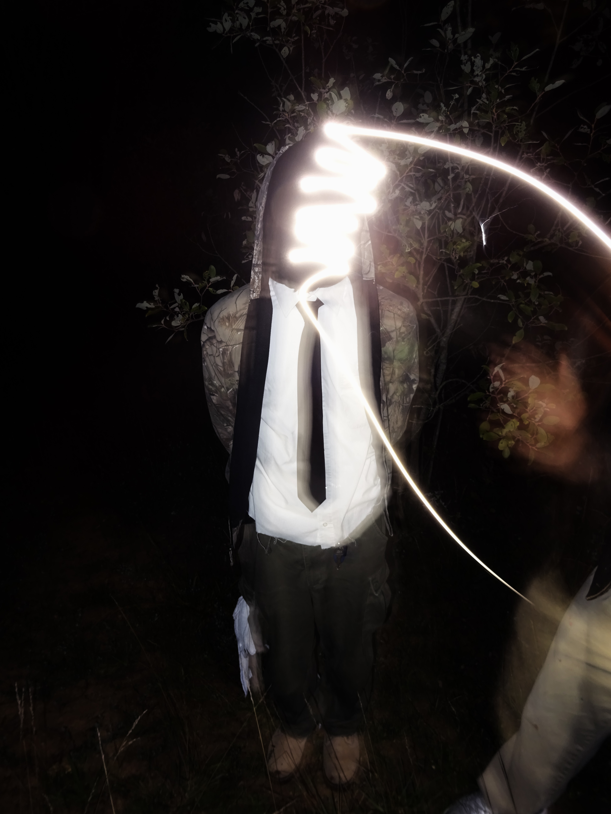

à propos
sur instagram üëÅÔ∏è
Quadriptique
Demande:
Réaliser un quadriptique photo.
CULTURE ULTRAVIOLENTE:
Poster sur l'arrivée de la japanimation en france et de sa lourde stigmatisation par les média francais.
